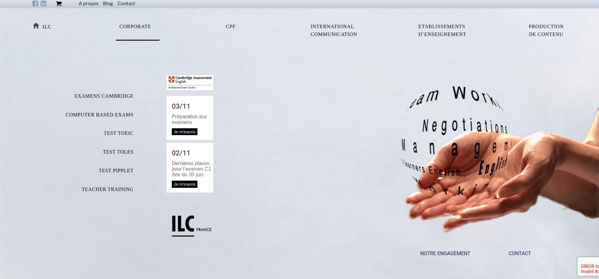
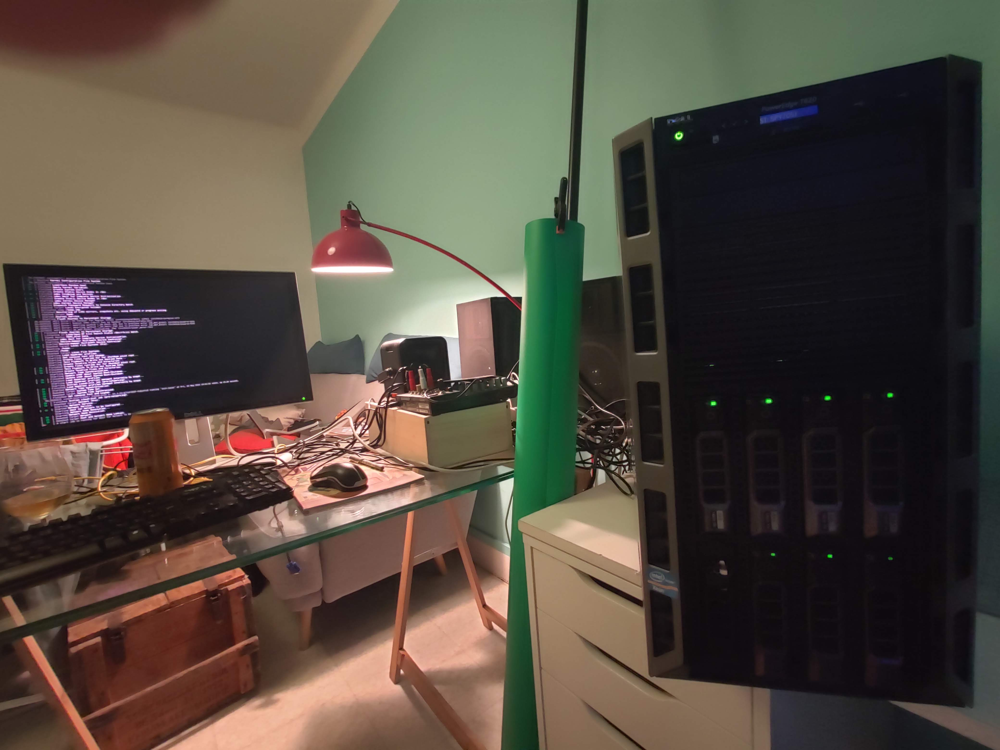

Projects :
Perso[blue]
Pro[violet]

Labybi
Un exercice où il fallait dynamiquement changer de niveau en utilisant que du HTML et CSS. Je n'ai pas pu m'empècher de le transformer en jeu. Le but est de trouver la sortie en passant sur la dernière case puis en cliquant sur "go lvl x". Sans utilisation de Javascript! Tous le reste à été fait en Javascript.

Refonte page Home/not Home Header
Refonte de la page Home et du Header de la page NoteHome pour le site ILC France. Le but était de rendre le site plus moderne et plus responsive. Le site est en cours de développement.

Making my own room's servers
Suite à la récupération de serveurs et l'envie de me mettre à Linux j'ai commencé à démarrer des servers. J'ai commencé par un serveur Nextcloud pour pouvoir stocker mes données et pouvoir les synchroniser entre mes différents appareils. J'ai ensuite installé un serveur web pour pouvoir héberger mon site web. J'ai aussi installé un serveur Ark pour pouvoir jouer avec mes amis.
_version_SANS_NOM .png)
Java
Suivi de cours en Java avec maitrise des Classes.
Hobbies